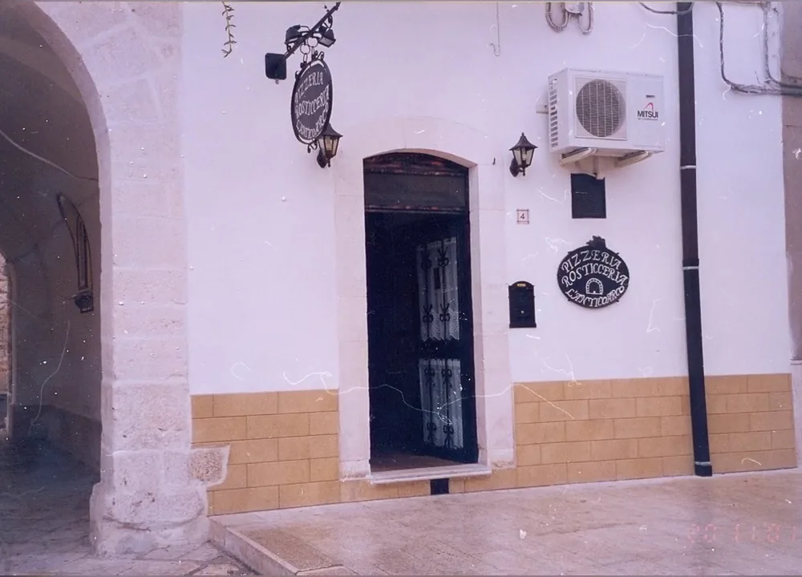
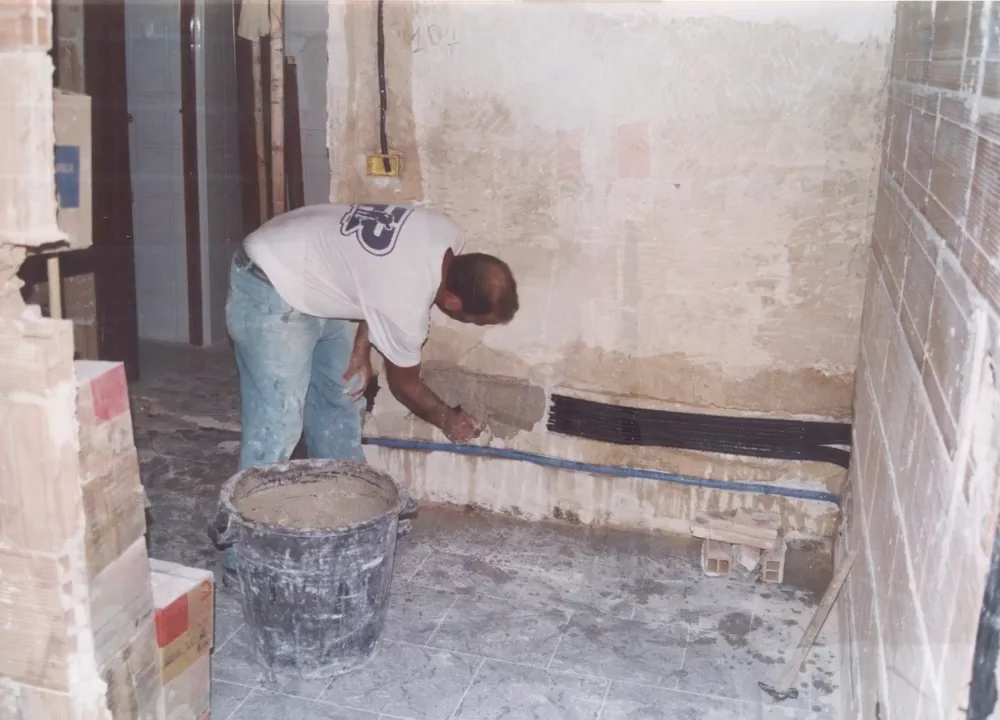
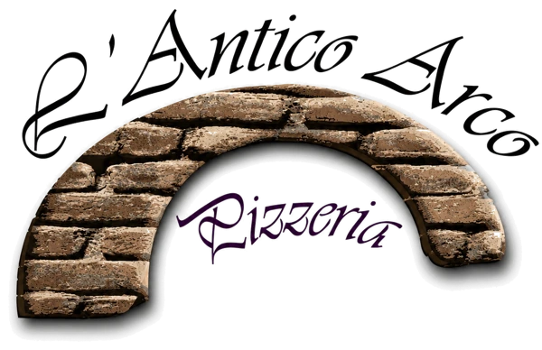
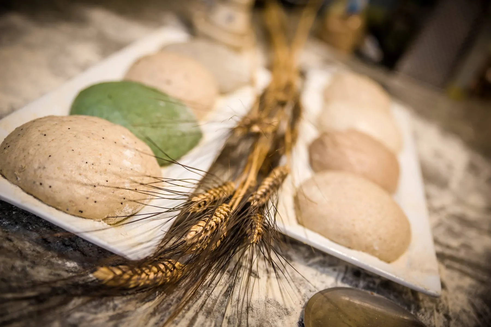
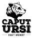
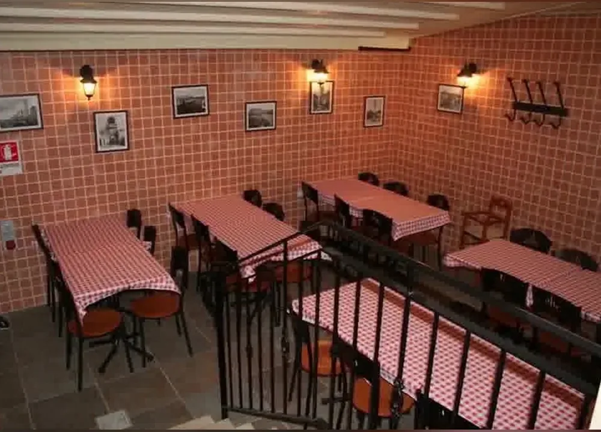
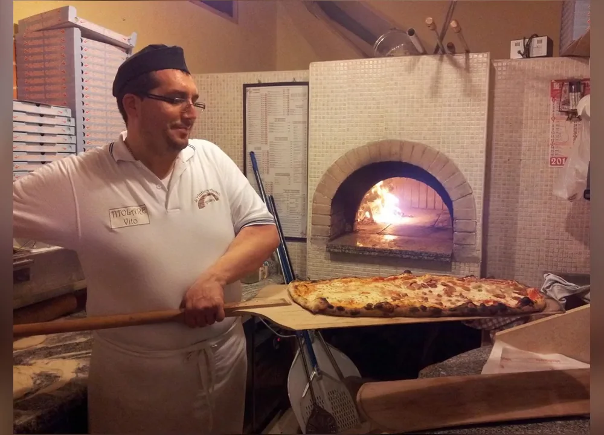
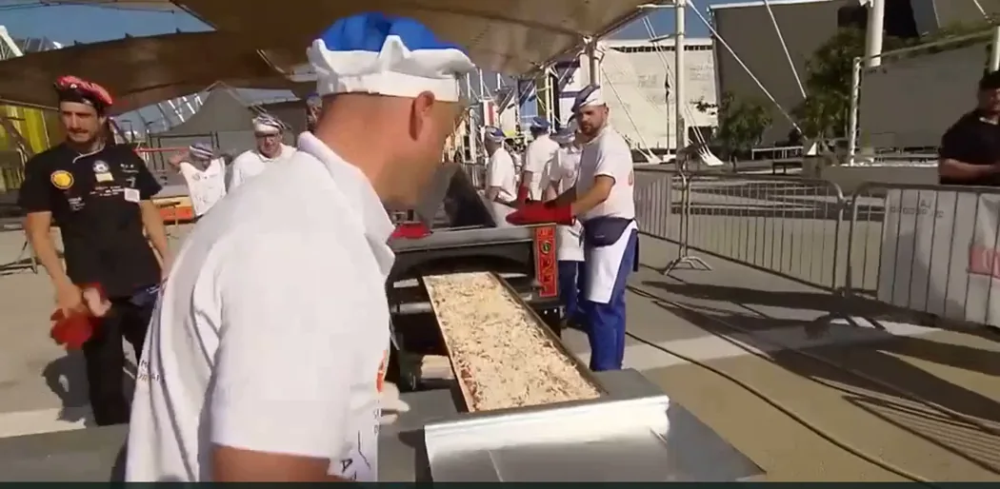
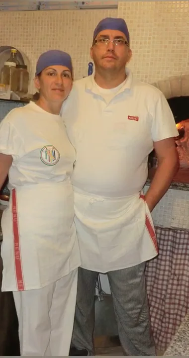

01 / Le origini
Da un piccolo arco.
Il 26 ottobre 2001 apre L’Antico Arco a Cellamare. Inizia una storia di famiglia, fatta di lavoro e passione.



Farine selezionate, il nostro forno a legna d’ulivo e la passione di una famiglia. Una pizza per ogni gusto.
01 · La materia prima
Murgia · Trapani
Farine biologiche di un piccolo mulino della Murgia, sale marino integrale di Trapani, olio extravergine bio.
Scegli tra nove impasti
02 · La scelta dell’impasto
Il classico e otto alternative con farine biologiche, dal farro al Senatore Cappelli. Li puoi scegliere su qualunque pizza.
Alcuni dei nostri fornitori


Un laboratorio dedicato
Dal 2011 un laboratorio dedicato, separato dal resto della cucina. Quando prenoti, dicci che sei celiaco.

04 · Le nostre radici
Dal 26 ottobre 2001, una storia di famiglia a Cellamare.
Ripercorri la nostra storia01 / Le origini
Il 26 ottobre 2001 apre L’Antico Arco a Cellamare. Inizia una storia di famiglia, fatta di lavoro e passione.


02 / Una nuova casa
I lavori, l’apertura della nuova sede e la sala raccontano un altro capitolo della nostra storia.

03 / Il laboratorio
Nasce il laboratorio dedicato, separato dal resto della cucina.
Scopri il laboratorio ↗
04 / La televisione
Il 25 novembre 2014 Alice TV presenta Angela. Nel marzo 2015 partecipa alle finali di Alice Master Pizza a Sorrento.
05 / Expo Milano
Vito partecipa con la squadra alla realizzazione della pizza da record all’Expo di Milano.

06 / 25 anni insieme
Ai nostri genitori, ai clienti e a tutti coloro che ci hanno accompagnato. Il film dei 25 anni ripercorre il nostro cammino, anche attraverso l’intervista Storytime.

Una storia che continua, ogni sera.
Vieni a trovarci05 · Vieni a trovarci
Asporto e domicilio. Si ordina per telefono, anche con consegna a casa.
Il sabato l'asporto è garantito fino alle 20:00; dopo le 21:00 diamo la precedenza ai tavoli e agli ordini già fissati.
Corso Roma 31, 70010 Cellamare (BA)
4,6/5
media di 72 recensioni sulla nostra pagina Facebook
«Antipasti con materia di primissima qualità, vasta scelta di impasti per pizze superlative e dolci buonissimi. Consigliatissimo!»
Media e frase da recensioni scritte dai clienti sulla nostra pagina Facebook, senza modifiche. Leggile tutte